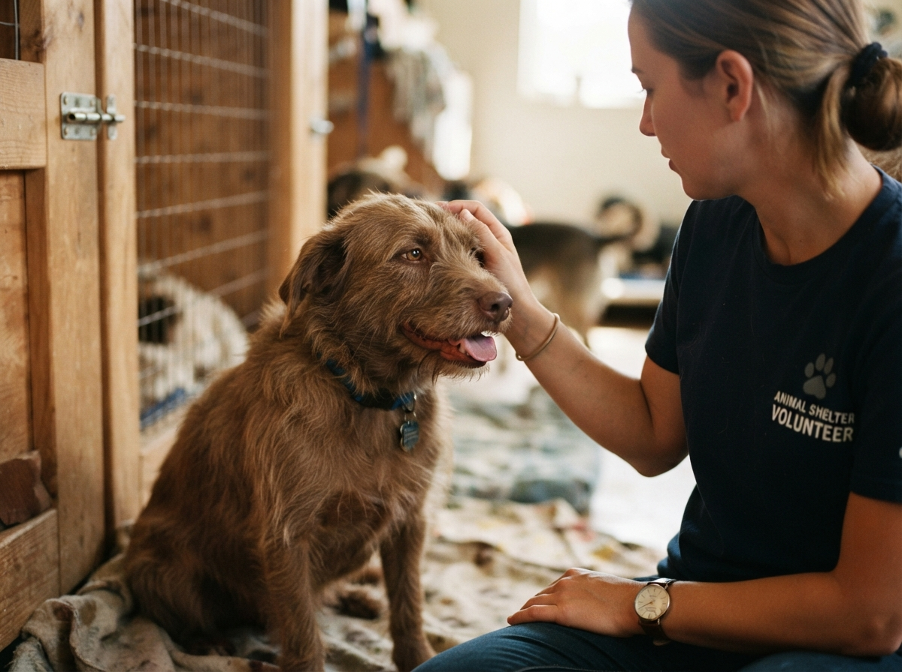
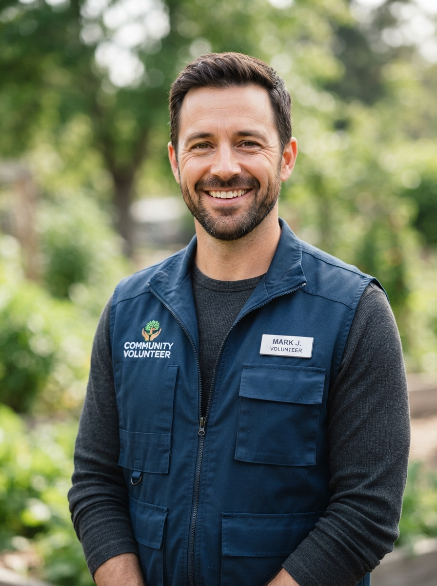
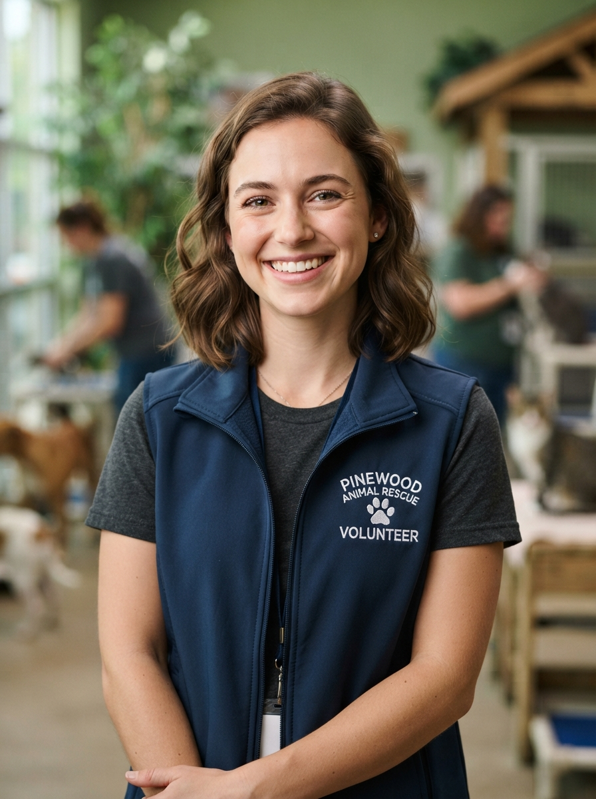

La gente detras de Huellas Felices
Un equipo que le dedica su tiempo a que cada animal en situacion de abandono encuentre un hogar seguro y lleno de amor.
Nuestra historia
Huellas Felices nacio en 2020 cuando Manuel encontro a un perrito herido en la calle y no habia donde llevarlo. Desde ese dia, junto a un grupo de amigos, empezaron a rescatar animales, darles atencion veterinaria y buscarles hogares.
Hoy somos un equipo de voluntarios comprometidos que trabaja todos los dias para que ningun animal quede sin un hogar. Ya rescatamos mas de 300 animales y contamos con una red de mas de 50 casas de transito.

El equipo

Manuel Argimon
Mi nombre es Manuel Argimon, me dedico a rescatar animales en situacion de abandono y encontrarles un hogar. Funde este refugio con el fin de que cada vez mas animalitos tengan un hogar y que su corta vida tenga, aunque sea, mucho amor.
Ayudanos
Sofia Vignolo
Mi nombre es Sofia Vignolo, me dedico a rescatar animalitos en situacion de abandono, adiestrarlos, alimentarlos y mimarlos mucho. Me uni a esta fundacion para ayudar a que el mundo sea un lugar seguro para nuestros animalitos.
AyudanosNuestros valores
Empatia
Cada animal merece ser tratado con amor y respeto, sin importar su condicion o historia.
Comunidad
Creemos que el cambio real viene de la gente. Por eso construimos redes de apoyo entre voluntarios y familias.
Transparencia
Cada peso donado tiene un destino claro: veterinaria, alimento o transporte de los animales rescatados.